Section Info Tool: Functional Requirements and Specification
Description| Overview & Definitions| Overview Diagrams| Functional Requirements|Specification with Wireframes
I. Description
Section Info is a a new Sakai administrative tool that primarily allows authorized users to create Course Sections and/or manage Course Section metadata and memberships. The tool can be made available to authorized users for each of their Course Sites from the standard toolbar.
While the Section Info tool can potentially be deployed with any type of Site, this documentation assumes it will generally be associated with Course Sites.
The new Sakai Manage Groups feature is treated within this document because of its very close functional relationship with the Section Info tool.
See II Overview and Definitions for Site, Course Site, Course Section below.
II. Overview & Definitions
Some definitions are taken in part and adapted from the Course Management Service Requirements document (http://bugs.sakaiproject.org/confluence/display/CMAPI/CM+Requirements). They are not part of any official Sakai glossary.
- Sites and Groups
- Worksite or Site -- Sakai "out of the box" (OOTB) has two types of Sites, Project Sites and Course Sites. Site types are extensible. The biggest change for all types of Sites in Sakai 2.1 is the introduction of Group and Section Awareness into Announcements, the Gradebook and Tests & Quizzes. See IIC Group and Section Awareness below.
- Course Site -- A Sakai Worksite or Site of the type Course. Sakai 2.1 Course Sites are primarily distinguished from Project Sites by a new set of default roles, Instructor, Teaching Assistant and Student. See IID Roles for more information. .
- Group -- A generic collection of users belonging to a single Site of any type. Groups are created and managed in the Site Info tool through the Manage Groups function. Manage Groups can be disabled for a Sakai installation via a properties setting.
Within Sakai 2.1, Groups always have
- A title or name
Optionally, Groups can have a description.
- Courses, Groups and Sections
- Canonical Course -- An abstract course that exists across sessions or terms. Sakai does not currently include any functionality to represent Canonical Courses, e,g, a course catalog.
- Course Offering aka Course -- An instance of a Canonical Course associated with a specific session, e.g., Math 16B Fall 2006 and the associated roster of Students, Instructors, TAs. A Course Offering can have a grade type, status type, etc. It may be concrete where the Canonical Course is abstract.
Despite the introduction of the Section Info tool, Sakai 2.1 will not offer a standard way of integrating, representing and managing within Course Sites the full range of Course data and the complex relationships among Course Offerings, e.g., cross-listed courses.
- Course Section aka Section -- A Course Section is an instance of a Course Offering. Course Sections are a superset of Groups. They are collections of users with information and memberships aligned with or defined by institutional enterprise data. Sections may have a schedule, location, roster, etc.
Sections may include everyone in the Course, or they may comprise subsets of Course members or both.
Within Sakai 2.1, Sections always have
- A "section category," e.g., lecture, discussion
- A Section title or name (by default this is the section category plus a sequential number)
- Business rules that regulate memberships. Students are not allowed to be in more than one Section of any single category
See IV Functional Requirements and IID Roles for optional Section metadata and additional membership rules.
- Course Group -- A Course Group is a Group created for a Course Site. Unlike Sections, Course Groups have no official relationship with or meaning to the institution.
There are no user interface or workflow distinctions between creating a generic Group and a Course Group in Sakai 2.1. Just like a generic Group, Course Groups are created and managed in the Site Info tool through the Manage Groups function. N.B.: Although there is a very close functional relationship between Sections and Course Groups in Course Sites, the Course Groups can NOT be managed in the Section Info tool. Similarly, Sections can not be managed in Site Info's Manage Groups function.
While Groups and Course Groups are virtually identical, there are at least 3 reasons for introducing a theoretical distinction between them at this time.
- Course Groups have a variety of functions (study groups, course projects, peer evaluation etc.) that post 2.1 will very likely entail a workflow and UI separate from what is now available for creating Groups in Site Info. The requirements for these different kinds of Course Groups are not yet fully known.
- Project sites do not have an OOTB TA role equivalent. The existence of the default Teaching Assistant (TA) role for Course Sites ensures that in Sakai OOTB, site members in the TA role who are added to a Course Group will retain any group-scoped capabilities within the group aware tools. In other words, a TA's Course Group and Section permissions are identical in those tools. For instance, if a TA is added to a Course Group with several students, that TA, while unable to send announcements to the entire Course Site, will be able to create and address an announcement to the Group that she is a member of (unlike the Student members).
- The Section Info tool has very few required fields. Under one Sakai integration scenario (See III Integration below), Instructors may create Sections of their own choosing, which, in effect, allows them to organize and name these Sections much as they would any other Group. The Sections in this scenario are likely to mirror official registrar data, but they don't have to. Again, the principal difference is the Course Site context.
- Course Groups have a variety of functions (study groups, course projects, peer evaluation etc.) that post 2.1 will very likely entail a workflow and UI separate from what is now available for creating Groups in Site Info. The requirements for these different kinds of Course Groups are not yet fully known.
- Group and Section Awareness
Terminology for the ability to represent Groups and Sections in Sakai tools and to enforce any authorizations within those tools based on a Site member's role. These authorizations or permissions are enabled at the Group or Section level (rather than at the Site level) in select Sakai tools.
Group and Section Awareness are provided by two different Sakai services, but from a basic functional and end user standpoint, there is no effective difference between the two. The Sakai service that provides Section Awareness does pass on additional metadata, e.g., the section category, that a Section Aware tool could make use of and expose in the user interface. Currently, this extra metadata is being used exclusively behind the scenes.
The Group and Section Aware tools in Sakai 2.1 are Announcements, Gradebook and Tests and Quizzes.
- Roles
- Instructor -- Usually a professor, lecturer or teaching assistant who is a member of a course and who has full administrative control of the Course Site and Sections/Groups. S/he has access to all Sections/Groups. Instructor is the equivalent to the generic Maintain role
- Teaching Assistant (TA) -- A graduate student instructor or faculty member with limited administrative access to and control of Sections within the Section Aware tools. TA has no equivalent generic Sakai role. Within the Section Info tool itself, the TAs will be able to:
- View Section metadata for all Sections
- View and manage student memberships in all Sections
- Student -- A member of a course and possibly of a Section(s) and/or group, but not in an administrative or instructional capacity for Sections. Student is equivalent to the generic Access role. Within the Section Info tool itself, the Students will be able to:
- View Section metadata for all Sections
- Depending on Instructor preferences, join and switch Sections
Default Roles ComparisonProject Site Course Site Maintain = Instructor ------ Teaching Assistant Access = Student - Integration
- Externally defined, externally controlled formal Sections -- Section metadata and memberships are defined and maintained in enterprise systems outside of Sakai. The Section Info tool is essentially in a read-only mode, with one major exception. In this mode, Instructors may still assign and re-assign TAs to Sections.
This scenario requires institutions to customize enterprise data providers in Sakai 2.1 in order to represent Course Section hierarchies.
- Externally initialized, internally managed and negotiated formal Sections -- Section metadata and memberships are defined wholly or in part in enterprise systems outside of Sakai, but can be managed and modified inside of Sakai. The 2.1 release does not support this type of Section management.
- Internally defined, internally controlled formal Sections -- Section metadata and memberships are defined and managed in Sakai (via the Section Info tool), but are usually aligned in many respects with "official" Sections, e.g., the meeting location.
Three new OOTB roles are supported in Sakai Course Sites:
Course Section data are usually defined and maintained to varying degrees in an institution's Registrar system. There are roughly 3 types of formal Course Section integration scenarios for institutions. The Section Info tool supports numbers 1 and 3 below. It is important to remember that, while the Section Info tool can represent some hierarchical Course structures, e.g., a lecture Course with multiple discussion Sections, their integration with Sakai is not supported OOTB.
III. Overview Diagrams
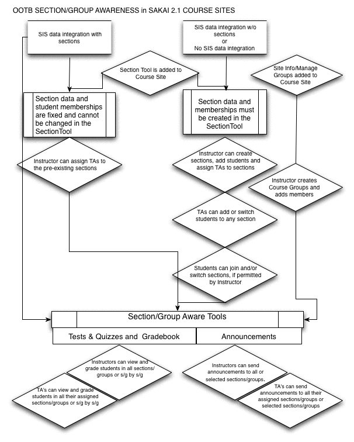
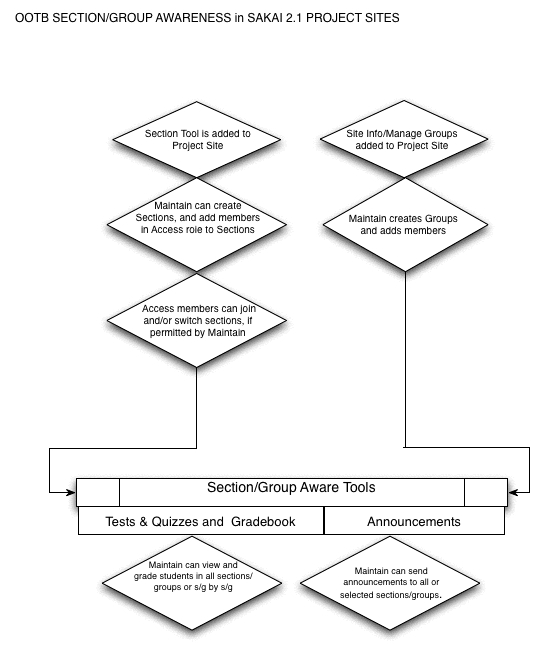
IV. Functional Requirements
Without Enterprise Section Data/Manual Section Creation
A. Instructor Requirements.
- Overview
- View and sort on a list of per-section specific info (days, time, assigned TA, room, current enrollment, available slots, max enrollment, section category).
- Open views to edit section properties, assign TAs and assign students for each individual section.
- Add Sections
- Create new sections for a course and specify the category (e.g., discussion, lab, project) and the number of sections of a particular category to be created.
- Give a distinct title to each section in a category. By default the section titles are the category names, with each section uniquely identified by a number in a sequence that ends with the total number of sections created within a category (lab 1, lab 2, lab 3 . . . lab 21).
- Set the locations and times of section meetings, and set the maximum number of students in a section.
- Roster
- View and sort on student name, IDs, section(s), enrollment status columns.
- Filter by student name or id.
- Set the number of students to view per page.
- Page through all students based on the number of students to view per page.
- Options
- Authorize students to sign up for and/or switch among all sections.
- Authorize students to sign up for and/or switch among all sections.
- Edit Section Properties
- Edit the locations and times of meetings, and the maximum number of students in a section.
- Disband sections.
- Assign Teaching Assistants
- Assign, re-assign zero or more TAs to one section at a time by selecting from current members of the course in the TA role. A TA may be unassigned to any section.
- Assign, re-assign zero or more TAs to one section at a time by selecting from current members of the course in the TA role. A TA may be unassigned to any section.
- Assign Students
- Assign, re-assign one or more student(s) to one section at a time by selecting from current members of the course in the student role. A student may be added to no more than one section within any section category. A student may be unassigned to any sections.
B. TA Requirements.
- Overview
- View and sort on a list of per-section specific info (days, time, assigned TA, room, current enrollment, available slots, max enrollment, section category).
- Open views to assign students for each individual section.
- Roster
- View and sort on student name, IDs, section(s), enrollment status columns.
- Filter by student name or id.
- Set the number of students to view per page.
- Page through all students based on the number of students to view per page.
- Assign Students
- Assign, re-assign one or more student(s) to one section at a time by selecting from current members of the course in the student role. A student may be added to no more than one section within any section category. A student may be unassigned to any sections.
- Assign, re-assign one or more student(s) to one section at a time by selecting from current members of the course in the student role. A student may be added to no more than one section within any section category. A student may be unassigned to any sections.
- Options
- View student authorizations to sign up for and/or switch among all sections.
C. Student Requirements.
- Sections
- Students can view a list of per-section specific info (days, time, assigned TA, room, current enrollment, available slots, max enrollment, whether they are member or not, etc.) and sort by the information columns.
- Authorized students can join and /or switch among all or selected sections.
D. Sakai Requirements.
- Managing memberships
- Provide a list of all students associated with a site
- Provide a list of all TA's associated with a site
- Prohibit any student from membership in more than one section per section category within a course
With Enterprise Section Data/Automated Section Creation
[IMPORANT NOTE: The services and modifications to other administrative tools necessary to support enterprise Section data OOTB will not be in place for the fall 2005 2.1 delivery. The Section Tool UI, however, will nevrtheless support the views on enterprise managed Sections as defined by the below requirements.]
E. Instructor Requirements.
- Overview
- View and sort on a list of per-section specific info (days, time, assigned TA, room, current enrollment, available slots, max enrollment, section category).
- Open view to assign TAs
- Roster
- View and sort on student name, IDs, section(s), enrollment status columns.
- Filter by student name or id.
- Set the number of students to view per page.
- Page through all students based on the number of students to view per page.
- Assign Teaching Assistants
- Assign, re-assign zero or more TAs to one section at a time by selecting from current members of the course in the TA role. A TA may be unassigned to any section.
F. TA Requirements.
- Overview
- View and sort on a list of per-section specific info (days, time, assigned TA, room, current enrollment, available slots, max enrollment, section category).
- View and sort on a list of per-section specific info (days, time, assigned TA, room, current enrollment, available slots, max enrollment, section category).
- Roster
- View and sort on student name, IDs, section(s), enrollment status columns.
- Filter by student name or id.
- Set the number of students to view per page.
- Page through all students based on the number of students to view per page.
G. Student Requirements.
- Sections
- Students can view a list of per-section specific info (days, time, assigned TA, room, current enrollment, available slots, max enrollment, whether they are member or not, etc.) and sort by the information columns.
H. Sakai Requirements
Note: Sakai here is defined as the combination of services and application specific business logic that will enable the system to automate and control section-related administrative tasks.
- Creating and editing sections and section categories
- Create one or more categories of sections based on course management data
- Prohibit the disbanding of any section officially defined through an enterprise system outside Sakai
- Managing memberships
- Associate enterprise defined students in a course with their sections
- Associate enterprise defined TAs in a course with their sections
- Provide a list of all TA's associated with a site
- Prohibit or restrict the membership management of sections officially defined through an enterprise system outside Sakai
V. Specification with Wireframes
Without Enterprise Section Data/Manual Section Creation
A. Instructor Requirements.
- Overview
The Overview page is is the entry page to the Section Info tool for Instructors. It is meant to give Instructors a quick picture of the Sections associated with a Site along with basic information about the Sections. The overview also serves as the jumping off point to actions that can be taken on the individual Sections.
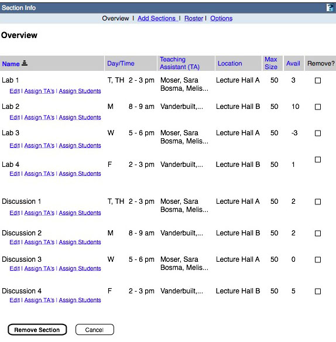- Global action links (links at the top of page)
- Clicking on an enabled link takes user to respective page. Links taking users to pages other than the one they are currently on are enabled. Page titles match the action link label.
- Global action links are persistently available from all pages within the Section Info tool.
- The active link or page user is on should appear disabled. In this case the “overview” link is disabled.
- If user navigates away from page using the global action links, data entered on this page is not saved.
- Overview Page Heading
- Static Informational page title
- Table Display and Sorting Rules
- Primary sort is always by section category in ascending order. Section categories are grouped together regardless of the secondary sort. The 'Out of the box' order of section categories is: Lecture, Discussion, Lab, Recitation, Studio.
- Section types are separated by 2 rows of white space.
- Initial (default) secondary sort is on section name within the section category grouping.
- Sort arrow allows user to switch between ascending an descending sorting within section type.
- Display sort arrow next to title of active sort column.
- Clicking title or arrow of active sort column reverses sort order.
- Clicking on non-active sort column activates sort in that column.
- Default sort for each column:
- Name = Alphanumeric
- Day/time = Calendar
- TA = Alphabetical on last name
- Location = Alphabetical on 1st letter
- Max size = Numeric, largest to smallest
- Avail = Numeric, largest to smallest
- Remove = no sort
- The sort order is preserved for the duration of the sessions. The default is reset at the beginning of each session.
- Sort on native language of user (rather than ID)
- Item action links (links under each item in list)
- Takes user to respective page and workflow. Page titles match the action link label.
- Name Column
- Display the name assigned to the section (see table sorting rules above for sort details).
- Day/Time Column
- Display current day/time associated with section. Day/time attribute may be set when creating and/or editing the section (see table sorting rules above for sort details).
- If no day/time associated with section, leave cell blank.
- Teaching Assistant Column
- Display <last name, first name> of current TA assigned to the section (see table sorting rules above for sort details).
- Display only 12 characters of name. If name is longer than 12 characters, display “…” at the end to signify there is more.
- For multiple TA’s assigned to a section, display each name on consecutive rows.
- If no TA assigned, display “None assigned” in cell.
- Location Column
- Display current location associated with section during section creation or editing (see table sorting rule rules above for sort details).
- Display only 12 characters of name. If name is longer than 12 characters, truncate display name in the middle using "..." to signify split.
- If no location associated with section, leave cell blank.
- Maximum Size (Max Size) Column
- Display current Maximum size associated with section during section creation or editing.
- If no sections have a maximum size associated with them, do not display the column.
- If >1, <all sections do not have a maximum size associated with them, leave the cells blank for those without a max size.
- Avail Size Column
- Display Maximum size – current size of section.
- Display true numbers even if it is a negative.
- Remove Column
- Display checkbox for all sections.
- Checked boxes activated by user checking on ‘remove section’ button.
- Remove Section Button
- If boxes have been checked in the remove column, display the remove confirmation page (next wire frame).
- Ignore check box action if user navigates away without clicking 'remove' button. When user arrives back at page, no boxes are checked (i.e. do not save interim action between pages)
- If no boxes have been checked in the remove column, redisplay page with alert message at the top, “You have not chosen a section to remove. Please use the ‘Remove’ column to choose the section(s) you would like to remove and click the ‘Remove Section’ button again.”
- Cancel Button
- Clears any boxes checked in the “remove” column.
- Global action links (links at the top of page)
- Remove Confirmation
The Instructor sees the remove confirmation page after clicking the Remove Section button on the Overview page (assuming they first selected sections to remove). This page is meant to protect Instructors from removing Sections unintentionally.

- Global Action Links
- Message
- List sections being removed in a bulleted list
- Remove Button
- On click, removes all sections in list and returns the Instructor to the overview page.
- The sections they removed will no longer be in the overview list.
- Cancel Button
- On click, cancel the action, take user back to the overview page without any sections checked. This starts them from a clean slate.
- Add Sections
The user arrives on the Add Sections page by choosing the "Add Sections" global action links from anywhere within the Section Info tool. It allows Instructors to create Sections and assign attributes such as meeting information to the Section.

- Global Action Links
- "Add Section(s)" Page Heading
- Static Informational page title
- Section number and category control
- On initial entry to page,the category dropdown is set to "-choose one-" as shown in the wireframe. The category choices for OOTB are: lecture, lab, discussion, recitation and studio.
- On initial entry to page, the add dropdown is set to '1'. The add dropdown choices are 1 , 2, 3, .... 8, 9, 10
- On arriving at this page, the add dropdown is the location of the cursor.
- Section categories are created in the configuration files for each instance of Sakai.
- If user changes the add dropdown, the page re-renders with the respective number of "forms" available. The wireframe shows 2 "forms".
- Upon category dropdown selection, the title for each section being created is automatically created with the format "[Section category] #" (# being the the next consecutive number of sections of that category for that site -- including any preexisting sections).
- Title
- Free text entry field that always displays current setting.
- This is the only required field on the form.
- On initial entry to page, the title is empty until a category is chosen from the dropdown. Upon dropdown selection, the title is automatically created with the format "[Section category] #" (# being the the next consecutive number on sections of that category for that site.
- If title exists for this site already (would only occur if user changes the name), display alert at the top of page, "The is already a section with the title, <title>, please create a new title.
- Days
- Display one checkbox for each day of the week, starting with Monday and ending with Sunday.
- By default, no boxes are checked when user arrives at this page.
- Checkboxes checked by user are meeting days assigned to the section. They are displayed in various other locations within the section tool. Eventually, when sections are integrated with course management, this information will display in other Sakai Tools (e.g. administrative tools).
- Roster
The user arrives on the Roster page by choosing "Roster" in the global action links. It displays all participants of the site assigned the 'student' role along with their section assignment.
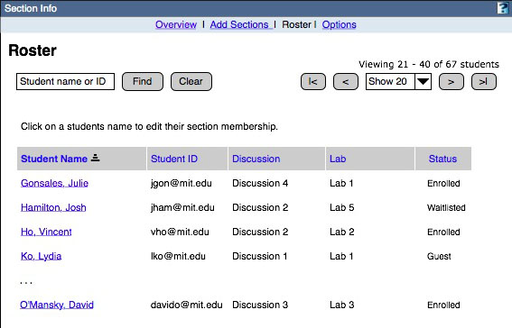- Global Action Link
- Find Rules
- Initial value: as in wireframe. When the focus comes to this field, the initial value disappears.
- If there is no match, the page reloads with an alert message that reads "There were no results found for "[the search term]". Please check your terms and try again." The table list remains the same.
- The last established students per page value is retained and displayed. Use the style guide specified for alert messages in the style guide.
- For search values, only the last space or comma separated value is treated as a substring:
Copp
Francis Ford Copp
Coppola, Francis F
ffcoppola@niebaum.edu
ffcoppAll return Coppola, Francis Ford
Francis F. Coppola Returns an error
- Case is ignored.
- Truncation or wild card symbols are not supported
- Clear resets the view to the default, except for the students per page, if that value has changed during the session.
- The enter key executes Find if the search box has focus
- Paging control
- The dropdown sets number of items to display on each page. By default, it is set to 20.
- |> button returns to the top of the list with the appropriate number (assigned by dropdown) displayed on the page.
- <| button takes user to the end of the list with the appropriate number (assigned by dropdown) displayed on the page.
- > moves display one page back toward the top of list with appropriate number displayed on page.
- < moves display one page forward toward the end of list with appropriate number displayed on page.
- "Viewing..." displays "x - y of total students" in the list.
- Table Sorting Rules
- Default sort on arrival at this page is by student name on last name (as shown in the wireframe).
- Display sort arrow next to title of active sort column.
- Clicking title or arrow of active sort column reverses sort order.
- Clicking on non-active sort column activates sort in that column.
- Default sort for each column:
- Name = Alphabetical by last name
- ID = Alphanumeric
- Section category columns (i.e. Discussion & section in wireframe) = Alphanumeric
- Status = Alphabetical
- The sort order is preserved for the duration of the session. The default is reset at the beginning of each session.
- Student Name Column
- Display names of students assigned to this site in the student role.
- Display names in the format, "Last name, First name Middle (if applicable)
- Student ID Column
- Display student ID
- If no student ID exists, a guest for instance, leave field blank.
- Section Name Columns (i.e. "Discussion" & "Lab")
- Display a column for each section category associated with the site.
- Display section assignment for each student.
- If section is not assigned to section of that category, leave field blank.
- Options
The Instructor arrives on the "Options" page by clicking the "Options" global action link. It allows Instructors to set rules around student self assignment to Sections.
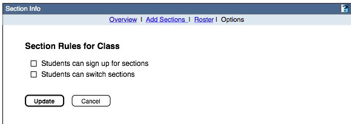- Global Action Links
- "Students can sign up for sections" checkbox
- Off by default
- Checking the box (and completing change by then choosing the 'update" button) allows students to initially sign up for sections. See "Sections" page in Student requirement section of spec.
- "Students can switch sections" checkbox
- Off by default
- Checking the box (and completing change by then choosing the "update" button) allows students to switch between sections once they are initially assigned to a section. See "Sections" page in Student requirement section of spec.
- Edit Section Properties
The Instructor arrives on the "Edit Section" page from the "Overview" page by clicking the "edit" link below a Section in the list. It is a form that allows Instructors to edit attributes / metadata associated with the Section. This information is displayed on other pages throughout the tool.
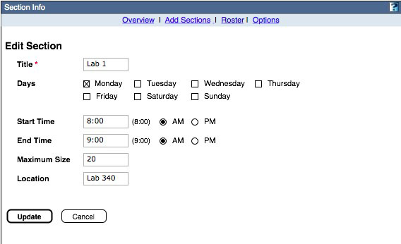- Global action links (links at the top of page)
- Clicking on an enabled link takes user to respective page. Links taking users to pages other than the one they are currently on are enabled. In this case, the user is on a ‘sub-page’ of the “Overview” page so all global action links are enabled. Page titles match the action link label.
- Global action links are persistently available from all pages within the section tool.
- Page Title
- Display Section Name in title for context.
- Title field
- Free text entry field that displays current setting.
- This is the only required field on the form.
- On arriving at this page, the title field is the default location of the cursor.
- Days
- Checkboxes for each day of the week, starting with Monday and ending with Sunday.
- Controls show current settings.
- Start Time: Time
- Text entry field.
- User is required to enter time in one of two formats:
- Same as example shown on interface, #:##
- Single or double number entered without colon is assumed to be the hour. If this is the case, upon leaving the field, display in format of example (i.e. user enters 9 then clicks in another field, time displays as 9:00).
- Text field displays current setting.
- Start Time: AM/PM
- Radio button control required if time is entered in text field.
- Once the radio button control is ‘turned on’, it always displays as on. However, if time gets cleared in text field, am/pm setting does not display in other parts of the tool (i.e. treat as one setting with display determined by text field).
- If there is no setting in the time field upon entering page, neither of these radio buttons is enabled.
- Control should display current setting.
- End Time
- See Start time 4. & 5. above.
- End time is not required even if start time is set. If start time is set but not end time, display only start time in other places within tool.
- Maximum Size
- Free text entry field
- If this field is not set, then maximum size is set to infinity and nothing is displayed for maximum size in other places in the tool.
- If max is set for less than current section size, on click of update button, display alert message at the top of overview page, "You have set <section name>'s Maximum size for <X> and there are currently <Y> students assigned to the section."
- Location
- Free text entry field.
- Current setting displayed in field by default.
- Data entered is displayed in other locations within the section tool.
- If field left blank for all sections associated with this site, do not show location information in lists of sections like the overview page.
- Update Button
- On click, users changes in the form are saved and they are returned to the overview page with the confirmation message at the top, "Your changes to <section name> have been saved! ".
- If required field, "Title", is left empty, re-render page with an alert message at the top, "A title is required. Please enter a title and update the section again".
- In addition, if title is left blank, add link next to the title field to "Create default" title. On click, a title is entered in the the field in the format [section category] [next consecutive number of sections of that category].
- Cancel Button
- On click, all data entry is ignored and user is returned to the overview page with focus on the section they were editing.
- Global action links (links at the top of page)
- Assign Teaching Assistants
Instructors arrive at the Assign Teaching Assistants page from the Overview page by choosing the Assign TA's link under a Section in the list. It allows Instructors to assign TAs to a Section from a predefined list. The course TA list is created through assigning site participants to the TA role from within other administrative tools (i.e. Site Info, Worksite Setup) in Sakai.
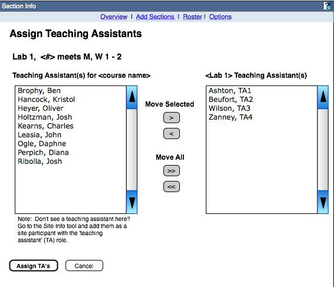- Global Action Links
- Section Information (i.e. "Lab 1, <#> meets M, W, 1 - 2" in wireframe)
- Information provided about the section. This is information assigned the section on the Add or Edit Sections pages.
- "Available Teaching Assistants" Combo Box
- Display label, "Available Teaching Assistants"
- Display all people assigned the TA role for this site. The role assignment is done in other administrative tools, like Site Info or Worksite Setup.
- Include Note under box as shown in wireframe.
- A TA is selected by clicking on the name. This highlights the name to show focus. Allow users to user ctrl and shift shortcuts to choose multiple names at once.
- <Lab X> Teaching Assistant Combo Box
- Display section title in place or <Lab X> in title for the combo box
- Display all TA's assigned to this section in the list.
- A TA is selected by clicking on the name. This highlights the name to show focus. Allow users to user ctrl and shift shortcuts to choose multiple names at once.
- Move / Move All Controls
- The arrows on the button show direction of data flow between the combo boxes. The top button copies all TA's from the TA's for course box into the <Section> TA's. The bottom button Removes all TA's from the <Section> TAs combo box.
- Move buttons, move selected names.
- Move all buttons, move all names in the combo box.
- Names only appear once a combo box but may appear in both boxes. If user attempts to move over a name already in the Section TA list, do not add them to the list again.
- If no names are selected upon clicking either button, give user an alert message at the top of the page, "Please choose a TA to move."
- Assign TA's Button
- If assistants have been added to the section during the session, clicking the button executes all changes the user has made on the page and returns them to the Overview page with a confirmation message at the top, "You have successfully assigned <TA name>, <TA name>, <TA name> and <TA name> as Teaching Assistants and removed <TA name>, TA name> from the list of TAs for <section name>!"
- Cancel Button
- Clicking the cancel button clears all changes users has made on the page and returns them to Overview page.
- Assign Students
Instructors arrive at this page from the Overview page by clicking on the "Assign Students" link under a Section in the list. It allows Instructors to assign participants of the site in the student role to a Section.
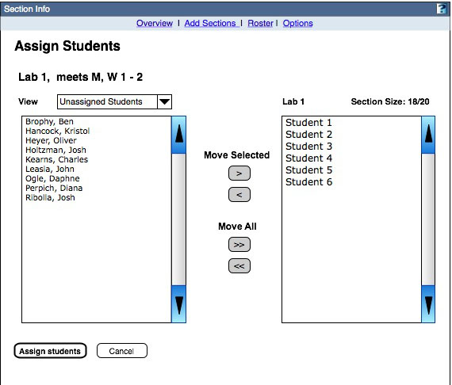- Global Action Links
- See "Global Action Links" under Overview page
- If user has made changes on this page and clicks a global action item to navigate away, display a confirmation message that requires user action, "You are about to leave this page, do you want to save changes you have made?". Include 'Save changes', 'Don't save changes' and 'Cancel' buttons.
- Section Information (i.e. "Lab 1, <#> meets M, W, 1 - 2" in wireframe)
- Information provided about the section. This is information assigned the section on the Add or Edit Sections pages.
- View dropdown
- The dropdown is a filter on the students participants list for the site that display in the combo box below. The dropdown selections are:
- Each section associated with the site = all students assigned to that section
- All = all participants of the site assigned to the student role
- Unassigned = all students not assigned to a section of this category
- The dropdown is executed when the user changes the selection.
- The dropdown is a filter on the students participants list for the site that display in the combo box below. The dropdown selections are:
- Students Combo Box
- The names that appear in the combo box are based on the view dropdown above.
- A student is selected by clicking on the name. This highlights the name to show focus. Allow users to user ctrl and shift shortcuts to choose multiple names at once.
- <Lab X> Teaching Assistant Combo Box
- Display section title as title for the combo box.
- Display number students assigned to section / maximum allowed in section on same row with title, left-aligned as seen in the wireframe. The number assigned is dynamic and changes as students are added to the combo box.
- By default display all students assigned to this section in the list.
- A student is selected by clicking on the name. This highlights the name to show focus. Allow users to user ctrl and shift shortcuts to choose multiple names at once.
- Move / Move All Controls
- The arrows on the button show direction of data flow between the combo boxes. The top button copies all TA's from the TA's for course box into the <Section> TA's. The bottom button Removes all TA's from the <Section> TAs combo box.
- Move buttons, move selected names.
- Move all buttons, move all names in the combo box.
- Names only appear once a combo box but may appear in both boxes. If user attempts to move over a name already in the Section TA list, do not add them to the list again.
- If no names are selected upon clicking either button, give user an alert message at the top of the page, "Please choose a TA to move."
- Assign Students Button
- If user has moved students between combo box, clicking the button executes all changes the user has made on the page and returns them to the Overview page with a confirmation message at the top, "You have successfully moved: <#> students from <section name> to <section name>. and <#> students from <section name> to <section name>!"
- If maximum number of students has been surpassed, add additional alert message below a. on confirmation page, " <Section name> now includes <X> students, 3 over your Max size limit! ".
- Cancel Button
- Clicking the cancel button clears all changes users has made on the page and returns them to Overview page
- Global Action Links
B. TA Requirements.
-
Overview
The overview page is is the entry page to the Section Info tool for TAs. It is meant to give them a quick picture of the Sections associated with this site along with basic information about the Sections. The overview also serves as the jumping off point to assign students to the individual Sections.
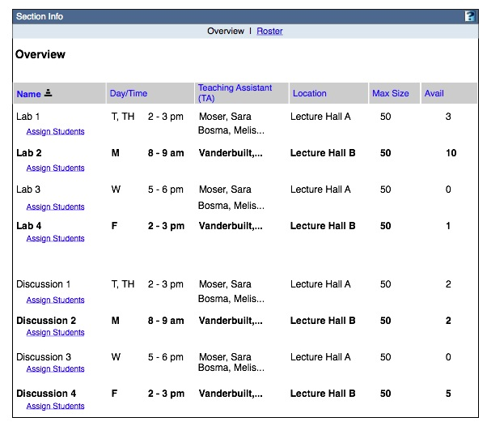- Global action links (links at the top of page)
- See Instructor Overview page for specification details.
- NOTE: The TA overview page does not include the "Add Sections" global action link that is in the Instructors view.
- Overview Page Heading
- See Instructor Overview page for specification details.
- Table Display and Sorting Rules
- See Instructor Overview page for specification details.
- Sections TA is assigned to have a 'strong' emphasis.
- Item action links (links under each item in list)
- See Instructor Overview page for specification details.
- TAs assigned to site can add and remove students to all sections (not just their own).
- NOTE: The TA overview does not include the "Edit" or "Add TAs" actions links that are in the Instructor view.
- Name Column
- See Instructor Overview page for specification details.
- Day/Time Column
- See Instructor Overview page for specification details.
- Teaching Assistant Column
- See Instructor Overview page for specification details.
- Location Column
- See Instructor Overview page for specification details.
- Maximum Size (Max Size) Column
- See Instructor Overview page for specification details.
- Avail Size Column
- See Instructor Overview page for specification details.
- Remove Column
- See Instructor Overview page for specification details.
- Remove Section Button
- See Instructor Overview page for specification details.
- Cancel Button
- See Instructor Overview page for specification details.
- Global action links (links at the top of page)
- Roster
- Assign Students
Please see Section VI.A.7 view for specification details
- Options
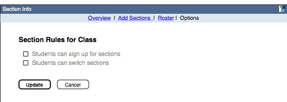
- Global Action Links
- "Students can sign up for sections" checkbox
- Read-only to allow TAs to see the rules for the class.
- "Students can switch sections" checkbox
- Read-only to allow TAs to see the rules for the class.
- Update Button
- Since this a read-only page, display button grayed out and disable.
- Cancel Button
- Cancel takes user back to Overview page.
Please see Section VI.A.3 for specification details
C. Student Requirements.
- <Sections
- Page Heading
- Informational only.
- Instructions
- Informational only.
- Instructions only display is students are allowed to sign up for and/or switch sections.
- View Dropdown
- The dropdown is a filter on the sections that appear in the table. The dropdown choices are:
- All Sections
- My Sections
- All <lab category> - one for each lab category associated with this site
- The default is "All Sections" as shown in the wireframe.
- The dropdown is a filter on the sections that appear in the table. The dropdown choices are:
- Table Display and Sorting Rules
- Section categories are grouped together regardless of the secondary sort.
- Within the section category grouping, sections are sorted by Day/time by default.
- Section categorys are separated by 2 rows of white space.
- Display sort arrow next to title of active sort column.
- Clicking title or arrow of active sort column reverses sort order.
- Clicking on non-active sort column activates sort in that column.
- Default sort for each column:
- Day/time = Calendar
- TA = Alphabetical on last name
- Section Name = Alphanumeric
- Location = Alphanumeric
- Change Schedule - "Member", "Switch to" & "Full"
- The sort order is preserved for the duration of the sessions. The default is reset at the beginning of each session.
- Time/Days column
- Display the Day(s) and time(s) associated with the section
- Teaching Assistant Column
- Display TAs assigned to the section. One TA per row.
- Display first 15 characters of name, then "..." if there is more.
- Section Name
- Display name of section
- Display first 15 characters of name, then "..." if there is more
- Location
- Display location associated with section.
- If no location has been associated, leave field blank.
- Change Schedule
Column
- Column only displays if section rules allow students to sign up for or switch sections.
- Rules are based on group of section category. Within each category:
- If student is not a member of a section, display "Join" action link for all available (not full) sections of that category. On click, student becomes a member of that section. The page re-renders with display updated to show that student is a member of section. NOTE: Section must have "allow students to join sections" setting turned on.
- If student is already a member of a section of category X, display "Switch to" action link for all available sections of that category not including the section they currently belong to. NOTE: Section must have "allow students to switch sections" setting turned on.
- Display "Member" for sections student belongs to.
- If section is at maximum size, display Full in field. Students are not allowed to sign up for full sections.
This is main and only page students view in the Section Info tool. Is is meant to give students an overview of the Sections associated with the site and highlight the Sections they belong to. If the Section rules have been set to allow students to sign up for and switch Sections, they complete those tasks on this page.
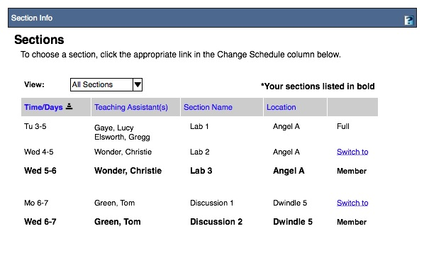
D. Sakai Requirements.
See Section VI.A.6 and Section VI.A.7 above for specification details.
With Enterprise Section Data/Automated Section Creation
[IMPORANT NOTE: The services and modifications to other administrative tools necessary to support enterprise Section data will not be in place for the fall 2005 2.1 delivery. The Section Info tool UI, however, will still support the views on enterprise managed Sections as defined by the below requirements.]
E. Instructor Requirements. The numbered Sections correspond to Instructor views in the Section Info Tool.
- Overview
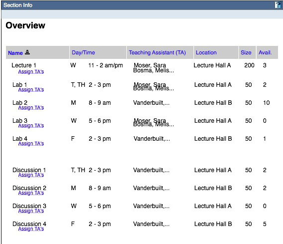
This is a read-only version of the Instructor Overview, without Enterprise Section Data except for the "Assign TAs" functionality.
- Roster
See Section VI.A.3 above for specification details
- Assign Teaching Assistants
See Section VI.A.6 above for specification details
F. TA Requirements. The numbered sections correspond to TA views in the Section Info Tool.
- Overview
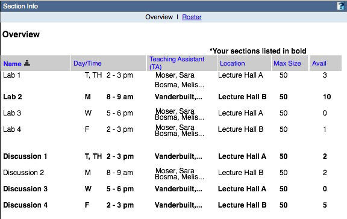 - Roster
See Section VI.A.3 above for specification details
This is a read-only version of the TA Overview, without enterprise Section data.
G. Student Requirements. The numbered sections correspond to Student views in the Section Info Tool.
- Sections
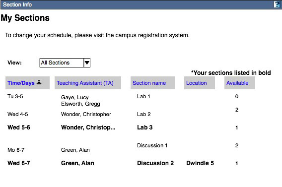
This is a read-only version of the Student Section page without enterprise Section data.
H. Sakai Requirements
- Creating and editing sections and section categories
- The section categories created by the enterprise are represented in the Roster. There is no capability for manually creating section categories. See Section VI.A.3.
- The column to remove a section is not present in the Overview. See Section VI.E.1
- Managing memberships
- Students and the sections they've been assigned to via the enterprise are represented in the Roster and the students' Section views. See Section VI.A.3. and Section VI.G.1.
- TA's and the sections they've been assigned to via the enterprise are represented in the Overview.
- If Instructors are permitted to assign and re-assign TAs, the list of TAs who are members of a site will be available in the Assign TAs view. See Section VI.A.6
- Depending on institutional deployment choices, the link to the Assign TAs view may or may not be made available to Instructors in the Overview. See Section VI.E.1